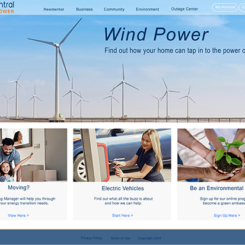
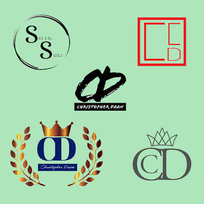
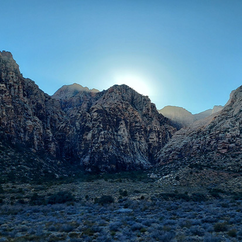

LAYOUTS
I practice book, magazine, and poster layout designs with Adobe features. I have the best time working on art with the best ideas for you.
I practice book, magazine, and poster layout designs with Adobe features. I have the best time working on art with the best ideas for you.
"AMTRAK" illustrations were made in Illustrator. The short video was created in Photoshop expressing scales, sounds and motion.
Designing websites by request and designing according to clients’ desires is my top priority. Here, I used Photoshop Adobe.

The following programs were used: Illustrator, Adobe Express, Canva, and Photoshp.

The following programs were used: Illustrator, Adobe Express, Canva, Photoshp, and Microsoft Snipping Tool.
The photo was taken in the desert next to Las Vegas, Nevada with smartphone, capturing the sun between the rocky hills.
